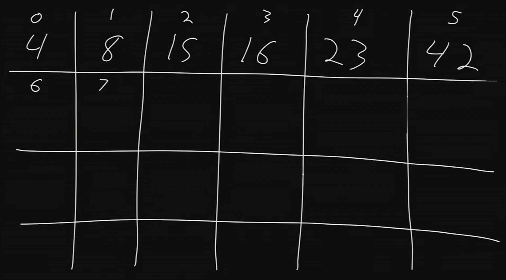
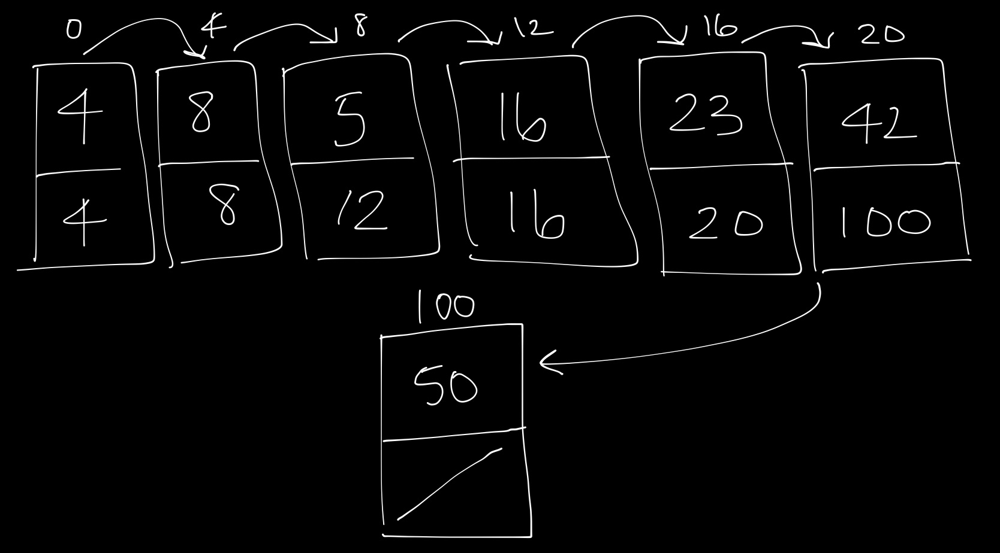
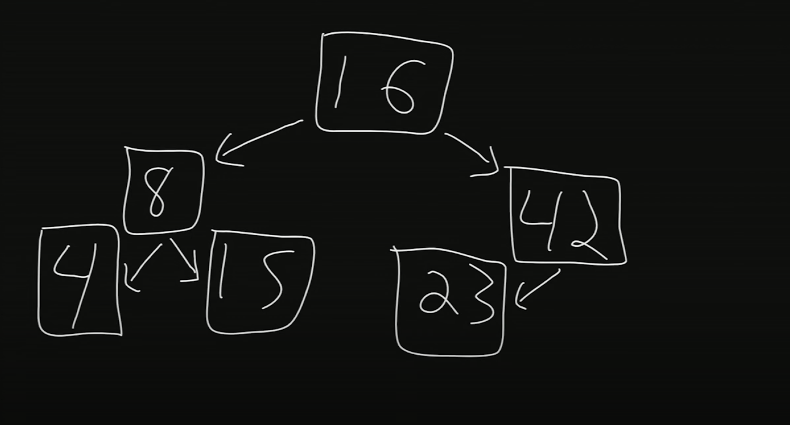
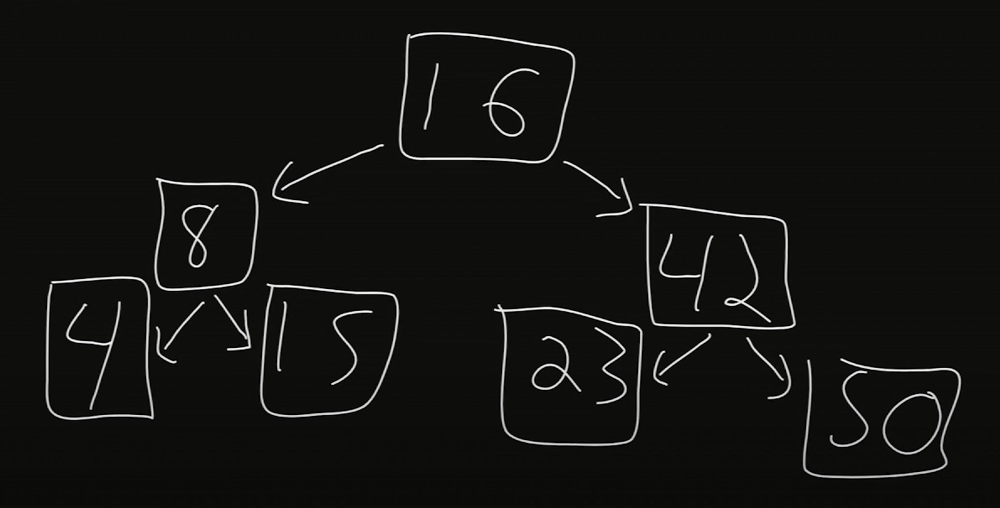
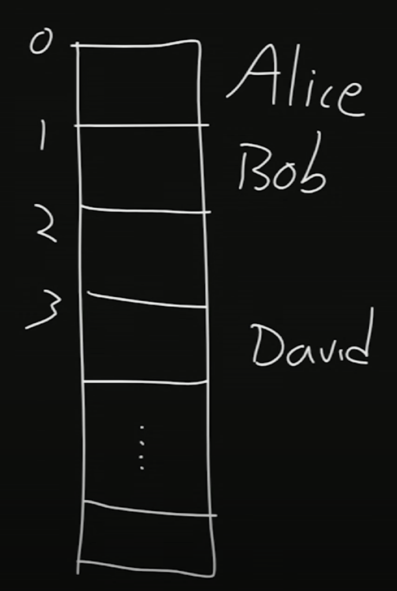
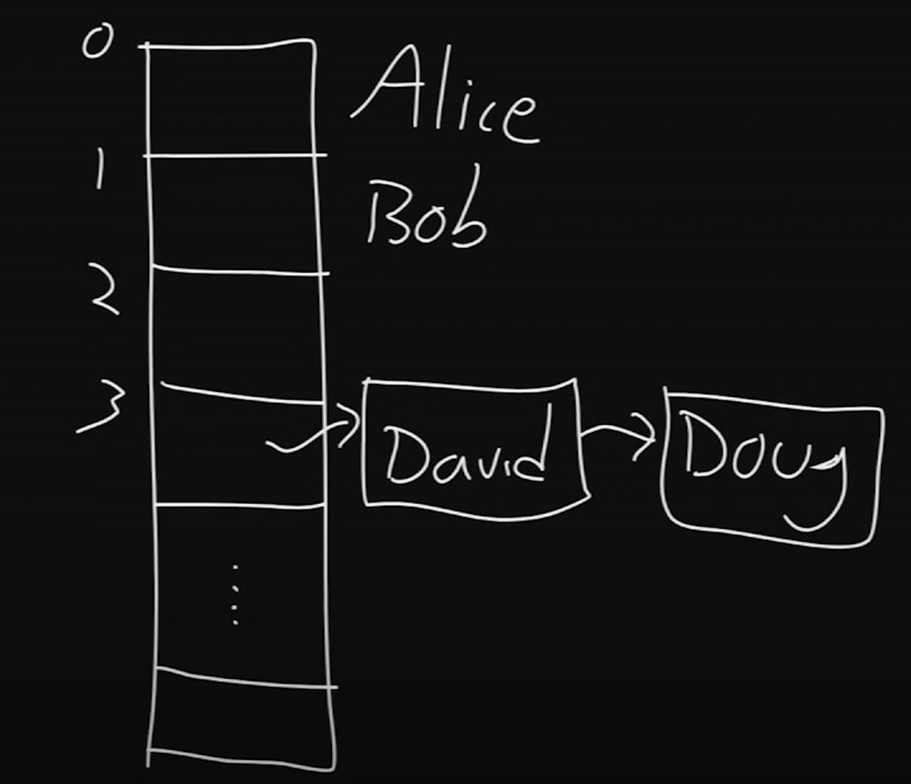

讲座 3
Searching
Searching Unsorted Data
-
Each of these boxes (numbered from 0 through 6) has a number in it. We want to find the number 50.
0 1 2 3 4 5 6 X X X X X X X -
At each step, we might 打开 the first unopened box and look inside until we find the number 50.
0 1 2 3 4 5 6 X X X X X X X 15 X X X X X X 15 23 X X X X X 15 23 16 X X X X 15 23 16 8 X X X 15 23 16 8 42 X X 15 23 16 8 42 50 X -
We found the number 50 after looking at
n - 1boxes, wherenis the total number of boxes we have. Essentially, we looked at roughlynboxes.
Binary Searching
-
Each of these boxes has a number behind it. The numbers are sorted now, and we want to find the number 50.
0 1 2 3 4 5 6 X X X X X X X -
We’d like to use the divide and conquer strategy that we previously used with our phone book.
-
First, we’ll go to the middle box and look at the number.
-
Since these numbers are 返回 to 返回 to 返回, we can mathematically determine which index to look at. Then, the computer can jump to that index in constant 时间.
-
There are 7 boxes, so the middle number must be at index 7/2 = 3.5, rounding down, gives us 3.
-
Remembering that we start with the 0th index, we 打开 the box at the 3rd index.
0 1 2 3 4 5 6 X X X 16 X X X
-
-
下一页, we’ll compare the number 16 to what we’re searching for: 50. 50 is larger, so we know that 50 cannot be located in any box before 16.
-
We’ll now 搜索 the remainder of the boxes in a similar manner. We’ll go to the middle box and look at the number.
-
There are 3 boxes, so the middle number must be at index 3/2 = 1.5, rounding down, gives us 1.
-
We 打开 the box at the 1st index.
0 1 2 3 4 5 6 X X X 16 X 42 X
-
-
We compare the number 42 to what we’re searching for: 50. 50 is larger, so we know that 50 cannot be located in any box before 42.
-
We 搜索 the remainder of the boxes.
-
There is only 1 box remaining, so the “middle” number is at index 1/2 = 0.5, rounding down, gives us 0.
-
We 打开 the box at the 0th index.
0 1 2 3 4 5 6 X X X 16 X 42 50
-
-
Finally, we compare 50 to what we’re searching for: 50. We’ve found it!
-
This arrangement, having data stored 返回 to 返回 to 返回, is known as an array.
-
笔记 that this only took us 3 steps. Like dividing and conquering the phone book, this algorithm also has log(n) efficiency.
Efficiency
-
When discussing upper bounds on how much 时间 an algorithm takes, we say that an algorithm has a big O of some formula.
-
Some formulas, where
nis a variable that represents the size of the problem, include-
n2
-
nlog(n)
-
n
-
log(n)
-
1
-
-
For 示例, for linear 搜索, when we’re searching boxes left to right or searching from the beginning of the phone book to the end, in the worst case, it might take as many as
nsteps to find the 50 or Mike Smith. Thus, we would say that the linear 搜索 algorithm isO(n). -
For 二分搜索, 笔记 that we are able to “remove” half the list each 时间. Thus, if we double the size of the input, it only requires one additional step. The 二分搜索 algorithm is
O(log n).
-
-
When discussing lower bounds on how much 时间 an algorithm takes, we say that algorithm is Ω of some formula.
-
Using the 上一页 示例, if the first few boxes we look at has 50 in it or if one of the first few entries in the phone book is Mike Smith, then the number of steps we take does not depend on
n. In this case, the linear 搜索 algorithm isΩ(1). -
The 二分搜索 algorithm is
Ω(1)as well.
-
-
When the upper bound and lower bound are the same, we can say that the algorithm is ϴ of some formula.
Sorting
- It was 更多 efficient searching a sorted list than an unsorted list. Now, we’ll discuss how we might 排序 a list.
冒泡排序
-
In 冒泡排序, the larger numbers bubble to the top during the sorting process.
-
Let’s start with these unsorted numbers. Their indexes are shown above. We wish to 排序 them in ascending order.
0 1 2 3 4 5 6 7 2 1 6 5 4 3 8 7 - First Pass
-
Looking at the first two numbers (0th and 1st index), 2 > 1, so we swap them.
0 1 2 3 4 5 6 7 1 2 6 5 4 3 8 7 -
下一页, looking at 2 and 6 (1st and 2nd index), we 笔记 that they are in the right order.
-
Looking at 5 and 6 (2nd and 3rd index), we 笔记 that 6 > 5, so we swap them.
0 1 2 3 4 5 6 7 1 2 5 6 4 3 8 7 -
下一页, looking at 6 and 4 (3rd and 4th index), we 笔记 that 6 > 4, so we swap them.
0 1 2 3 4 5 6 7 1 2 5 4 6 3 8 7 -
下一页, looking at 6 and 3 (4th and 5th index), we 笔记 that 6 > 3, so we swap them.
0 1 2 3 4 5 6 7 1 2 5 4 3 6 8 7 -
下一页, looking at 6 and 8 (5th and 6th index), we 笔记 that they are in the right order.
0 1 2 3 4 5 6 7 1 2 5 4 3 6 8 7 -
下一页, looking at 8 and 7 (6th and 7th index), we 笔记 that 8 > 7, so we swap them.
0 1 2 3 4 5 6 7 1 2 5 4 3 6 7 8
-
-
Second Pass
-
We follow the same steps as above, comparing the adjacent numbers.
-
After the second pass, we get
0 1 2 3 4 5 6 7 1 2 4 3 5 6 7 8
-
- We can continue with the passes: after each pass, the largest unsorted number is placed in its sorted position. After
npasses, we can guarantee that allnelements are sorted.
- First Pass
-
The pseudocode we might write is:
repeat until no swaps for i from 0 to n-2 if i'th and i+1'th elements out of order swap them-
iis an integer that represents an index - Since we are comparing the
i‘th andi+1‘th element, we only need to go up ton-2for i. Then, we swap the two elements if they’re out of order.
-
-
We are making
n-1comparisons, or roughlyncomparisons, for each pass. Additionally, we make roughlynpasses. Multiplying, this algorithm is on the order of n2. -
With each step, we are improving the sortedness of the data. Essentially, we are solving local problems to achieve a global result.
选择排序
-
In 选择排序, in each pass, we select the smallest number.
-
Let’s start with these unsorted numbers. We wish to 排序 them in ascending order.
0 1 2 3 4 5 6 7 2 3 1 5 8 7 6 4 -
First pass:
-
We look at the first unsorted number, which is 2. Now, we look at the rest of the list.
- 3 is greater than 2, so 2 is still the smallest.
- 1 is 较少 than 2, so 1 is now the smallest.
- 5 is greater than 1, so 1 is still the smallest.
- 8 is greater than 1, so 1 is still the smallest.
- …
- 4 is greater than 1, so 1 is still the smallest.
-
Now, we swap the 1 with the first unsorted number, or 2. We get this list:
0 1 2 3 4 5 6 7 1 3 2 5 8 7 6 4
-
-
Second pass:
-
We look at the first unsorted number, which is 3. Now, we look at the rest of the list.
- 2 is 较少 than 3, so 2 is now the smallest.
- 5 is greater than 2, so 2 is still the smallest.
- 8 is greater than 2, so 2 is still the smallest.
- …
- 4 is greater than 2, so 2 is still the smallest.
-
Now, we swap the 2 with the first unsorted number, or 3. We get this list:
0 1 2 3 4 5 6 7 1 2 3 5 8 7 6 4
-
-
Third pass:
- We proceed similarly. After the third pass, we find that 3 is the smallest, and it is in the correct position.
-
Fourth pass:
-
After the fourth pass, we find that 4 is the smallest, and we swap 5 with 4.
0 1 2 3 4 5 6 7 1 2 3 4 8 7 6 5
-
-
Fifth pass:
-
After the fifth pass, we find that 5 is the smallest, and we swap 8 with 5.
0 1 2 3 4 5 6 7 1 2 3 4 5 7 6 8
-
-
Sixth pass:
-
After the sixth pass, we find that 6 is the smallest, and we swap 7 with 6.
0 1 2 3 4 5 6 7 1 2 3 4 5 6 7 8
-
-
Seventh pass:
-
After the seventh pass, we find that 7 is the smallest, and it is in the correct position.
0 1 2 3 4 5 6 7 1 2 3 4 5 6 7 8
-
-
-
The pseudocode we might write is:
for i from 0 to n-1 find smallest element between i'th and n-1'th swap smallest with i'th element -
笔记 that the amount left to be sorted steadily decreases. For the first pass, we look through
nelements. For the second pass, we look throughn-1elements. This continues until we only have 1 element left. Adding these, we getn + n-1 + n-2 + ... + 1 = n(n - 1)/2 = n^2/2 - n/2. -
We can ignore the lower level terms, and this algorithm is on the order of n2.
-
Why can we ignore the lower level terms? These terms play an insignificant role once
nis large.-
For 示例, if n = 1000000, then n2/2 - n/2 = 10000002/2 - 1000000/2.
-
This is equivalent to 500000000000 - 500000 = 499999500000. This value is pretty 关闭 to 10000002/2 or 500000000000.
-
归并排序
-
Instead of sorting the entire list at once, we can implement a divide and conquer strategy.
-
When we have an unsorted list, we will
- 排序 the left half.
- 排序 the right half.
- Interweave the two lists together.
-
For step 1, when sorting the left half, we can apply the same algorithm. We 排序 the left half of the left half, then the right half of the left half, and then we merge them together.
-
If we continue to halve and halve, we’ll end up with one element as the left half and one element as the right half. We no longer have to do steps 1 and 2 since the halves are already sorted, but we do have to interweave these two in order to merge them.
-
归并排序 takes 较少 时间 than the 上一页 two sorts, but there is a trade-off. 归并排序 takes twice as much space, as it requires additional space to 排序 the halves before interweaving the halves.
内存
-
Computers store data in RAM or Random Access 内存. The term “Random” in this case refers to a computer’s ability to jump in constant 时间 to a specific byte.
-
Pictured is a 内存 chip on a RAM stick. The grid is an artist’s rendition of how we can number each of the bytes in the chip.

-
When we store a float, we’re asking the computer for 32 bits. Bytes to the left or right of the allocated 内存 might already be in use, so we can’t use 更多 than 32 bits for this float. This leads to floating point imprecision, a topic from the 上一页 周.
数据结构
Arrays
-
All of the previously mentioned 算法 assume that the values are stored in an array.
-
When we store numbers in an array, each value is 返回 to 返回, so we can use arithmetic to get an index. Then, we can instantly jump to that address. This gives us random access, which is constant 时间.
-
Suppose we want to store six values in 内存. We then ask our operating system for just enough bytes for six numbers. The indexes are numbered 0 through 7.

-
What if we wanted to add the number 50?
-
Since we only asked our operating system for enough bytes for six numbers, the operating system might have already allocated the 内存 from 6 and beyond to some other aspect of our program.
-
For a temporary fix, we could’ve just asked the operating system for enough space for 7 or 8 or even 100 values.
- In this case, we’re asking for 更多 内存 than we actually need. Then, the computer has 较少 space for other programs to store and run.
-
We could also just add 50 where there is free space. Let’s say at index 15, we have space to store 50. Let’s draw an arrow to denote that after 42 comes 50.

-
The equivalent to drawing an arrow is to store the address of the number 50 alongside 42. This way, once we get to 42, we’ll 笔记 that we should go to index 15.
-
We don’t have enough space at index 5 to store both 42 and the address. Instead, we’ll take 笔记 of this idea of storing addresses.
-
-
链表
-
A linked list allows us to store and remove values by linking the values together.
-

-
In each node, or box drawn here, we store a value (data) and the address of the 下一页 value.
-
For 示例, the first node contains the value 4. To find the 下一页 value, we go to the address stored, which is 4. Then, we go to the 4th index, which has the value 8.
-
As another 示例, assume we’re at the index 20. It has value 42. To go to the 下一页 value, we go to the address indicated on this node, of index 100. We find that at index 100, we have the value 50.
-
-
To remove a node, we can simply snip it out and redirect an arrow, thereby changing an address.
-
To add a node, we can store it somewhere and update the address at index 100 to point to the new node.
-
We’re now able to add and remove values, but we no longer have random access. To 搜索 through a linked list, we must traverse in linear 时间 from the first element to the last.
-
Additionally, we are using twice as much space as an array since we also have to store the 下一页 node’s address.
二分搜索 Trees
-
In a 二分搜索 tree, each node has two children (hence binary), one child 较少 than it and one child greater than it.
-

-
16 is the root of this tree.
-
To the left of 16 is its left child, and to the right of 16 is its right child.
-
Within this tree, we also have many subtrees. The children of 16 are subtrees themselves; for 示例, rooted at 8 is a child called 4 and a child called 15.
-
笔记 that for each node
N, its left child is 较少 thanNand its right child is greater thanN. -
Let’s look for the number 15 in this structure. We’ll start at 16, the root node. 15 is 较少 than 16, so we’ll go to the left child. 15 is greater than 8, so we go to the right child. And we’ve found 15!
- In searching this 二分搜索 tree, we looked at 较少 nodes than we would in a linked list. By having a 2 dimensional data structure, we were able to create 更多 organization.
-
We can also easily modify the size of the 二分搜索 tree. Suppose we wanted to add the number 50. Starting from the root, we 笔记 that 50 is greater than 16, so we go to the right child. 50 is also greater than 42, and 42 does not have a right child yet. Thus, we insert 50 as the right child of 42.

-
-
Binary trees can become unbalanced if we just keep adding larger and larger values. There exist 更多 complex 算法 that are able to re-balance the tree after adding values.
-
With a 二分搜索 tree, we can add and remove values and 搜索 quickly. However, the tradeoff is requiring 更多 space, as 2 additional chunks of 内存 are 必需 to store the 2 children.
哈希表
-
哈希表 have constant 搜索 时间. Let’s look at an 示例.
-
Here, we have an array. Alice is stored at index 0, Bob is stored at index 1, and David is stored at index 3.

-
A hash function takes some value as input and returns an index where we store the value. The particular hash function we’re using here looks at the first letter of each string. An
Aat the first letter will map to the 0th index, aBat the first letter will map to the 1st index, and so on.- The function in this case, takes the ASCII value of the first letter and subtracts 65, which is the ASCII value for
A.
- The function in this case, takes the ASCII value of the first letter and subtracts 65, which is the ASCII value for
-
Inserting these names is thus constant 时间, as hashing is constant 时间 and we can get to that index via random access.
-
-
When we add Doug, we’ll 笔记 that David is already in index 3 of this array. This is considered a collision, where multiple inputs map to the same output.
-
To store both values, we’ll use a linked list. It might look like this:

- A hash table approximates constant 时间—for a good hash function, we’ll have very few collisions, meaning we won’t have to traverse through 链表 to 搜索 for, add, or delete a value.
Python
-
Certain data types in Python are reminiscent of the 数据结构 here.
-
In Python, the
dicttype stands for dictionary. This is essentially a hash table.-
The indexes in this case are words.
-
Via these indexes or words, we can return a value.
-
-
In Python, the
listtype is an array that we can change the size of, similar to a linked list.